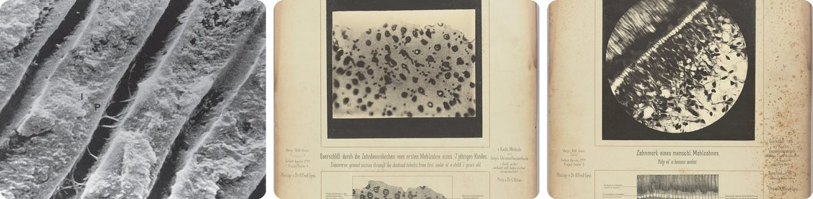

🌍 十大 牙齿结构、蛀牙和牙齿趣事
2026年11月17日
1. 💎 牙釉质是你身体里最硬的东西
 牙齿外面那层白白亮亮的东西叫牙釉质，它比你身上任何一块骨头都硬。它96%是矿物质，主要是一种由钙和磷酸盐组成的晶体，最厚也不超过2.5毫米，差不多是两枚一角硬币叠起来那么厚。
牙齿外面那层白白亮亮的东西叫牙釉质，它比你身上任何一块骨头都硬。它96%是矿物质，主要是一种由钙和磷酸盐组成的晶体，最厚也不超过2.5毫米，差不多是两枚一角硬币叠起来那么厚。
可它也很脆，而且有个大弱点：它不是活的。制造牙釉质的细胞，在牙齿还没长出牙龈之前就已经分解掉了。
所以牙釉质没有神经、没有血液，也没办法重新长出来。嘴巴能修复一点点早期的小损伤，可一旦真的出现了洞，你的身体和牙医都没法让它长回来。补牙只是把洞堵上而已。
这是一副永远修不好、只能打补丁的盔甲。
2. 🧊 牙釉质下面，牙齿里全是小小的管子

牙釉质下面是牙本质，这一层偏黄，比较软，牙齿的颜色主要就是它决定的。它里面挤满了显微镜才看得见的小隧道，叫牙本质小管。靠近牙齿中心的地方，每平方毫米就有59,000到76,000根，那块地方也就铅笔尖那么大。每根小管里都有一个活细胞伸进来的细“手臂”和一点液体。当牙釉质磨掉、这些小管露出来时，目前最主流的说法是：冷的东西让液体移动 → 液体一动就刺激到神经 → 你就感觉到那一下“酸痛”。
而且跟牙釉质不一样，牙本质一辈子都在慢慢长。
可以把它想成一块海绵，里面插满了通向神经的小吸管。
3. 🔴 每颗牙都有一个活的核心，年纪越大它越小
 每颗牙的正中间是牙髓：里面有神经和血管的软组织。它从牙冠里的一个小空腔，一直往下延伸到牙根里细细的管道。
每颗牙的正中间是牙髓：里面有神经和血管的软组织。它从牙冠里的一个小空腔，一直往下延伸到牙根里细细的管道。
成年人一颗牙的牙髓只有大约0.02立方厘米，还不到半滴水。它最外面那层细胞，就是一直在制造新牙本质的细胞。
因为新的牙本质是往里长的，所以年纪越大，牙髓腔就越小。如果蛀牙一路烂到牙髓，牙医可能就得做根管治疗，也就是把牙髓清理掉。
换句话说，一颗牙就是一个硬壳，包着一个小小的、活的中心。
4. 🍬 让牙齿变坏的不是糖，而是吃糖的细菌
 蛀牙需要四样东西：牙齿、对的细菌、糖和时间。最主要的捣蛋鬼是一种叫变形链球菌（Streptococcus mutans）的细菌，它住在牙齿表面那层黏黏的膜里，这层膜叫牙菌斑。
蛀牙需要四样东西：牙齿、对的细菌、糖和时间。最主要的捣蛋鬼是一种叫变形链球菌（Streptococcus mutans）的细菌，它住在牙齿表面那层黏黏的膜里，这层膜叫牙菌斑。
你吃糖的时候，这些细菌也在吃，然后把糖变成乳酸。一旦牙菌斑的pH值降到5.5以下（比黑咖啡稍微没那么酸一点），牙釉质就开始溶解。它们还会把白砂糖变成一种黏黏的“胶水”，帮自己牢牢粘在牙上。
所以吃零食的次数很重要：每吃一次甜的，牙菌斑很快就会变酸。2016年，全世界大约有36亿人，差不多一半的人，恒牙上有蛀牙。
说白了，你吃的每块糖都分给了细菌一份，它们剩下的“残渣”就是酸。
5. 🪨 牙结石就是变硬的牙菌斑，里面全是“化石”细菌
 如果牙菌斑在牙齿上待得够久，唾液里的矿物质就会渗进去，让它变硬，变成牙结石，也叫牙石。
如果牙菌斑在牙齿上待得够久，唾液里的矿物质就会渗进去，让它变硬，变成牙结石，也叫牙石。
变硬的过程会把里面的细菌杀死，可它留下了一个粗糙的表面，新的牙菌斑更容易粘上来 → 一层又一层越堆越多 → 刺激牙龈，让牙龈肿起来、往后缩。一旦变硬了，牙刷就刷不掉了，得让牙科卫生师把它刮掉。
科学家把它比作混凝土，死掉的细菌就像里面的碎石。它挤得特别满，一毫克，也就是比一粒米还小的一点点，就有大约2亿个细胞。考古挖出来的牙结石里，甚至还保存着DNA和食物残渣，能看出古人吃过什么。
这是一本写在你牙齿上的、用石头记下的饮食日记。
6. 🥤 汽水和果汁就算没有细菌，也能把牙磨掉
 蛀牙是细菌造成的，可酸蚀不是。它是食物和饮料里的酸直接把牙釉质溶掉。这是5到17岁孩子最常见的长期问题。
蛀牙是细菌造成的，可酸蚀不是。它是食物和饮料里的酸直接把牙釉质溶掉。这是5到17岁孩子最常见的长期问题。
pH值低于大约5.0到5.7的饮料就能做到。可乐里真正的问题不是气泡，而是为了调味加进去的柠檬酸和磷酸。果汁也很狡猾：在测试过的饮料里，它最能抵抗唾液中和酸的作用。
喝的次数比喝的总量更重要。一口一口地反复喝酸饮料，就等于一次又一次把牙泡回酸里。
这就像你的牙在一盆淡淡的酸水里慢慢融化。
7. 🇺🇸 科罗拉多州的褐色斑牙，引出了氟
 20世纪初，一位叫弗雷德里克·麦凯的牙医发现，科罗拉多州很多人的牙上都有一块块褐色的斑，人们叫它“科罗拉多褐斑”。奇怪的是：这些有斑的牙几乎从来不长蛀牙。
20世纪初，一位叫弗雷德里克·麦凯的牙医发现，科罗拉多州很多人的牙上都有一块块褐色的斑，人们叫它“科罗拉多褐斑”。奇怪的是：这些有斑的牙几乎从来不长蛀牙。
麦凯花了30年研究这个谜。1931年，一位化学家化验了这种斑很常见的几个地方的水，终于找到了答案：饮用水里天然含有氟。
科学家后来发现，少量的氟，大约每升1毫克，就能预防蛀牙，最多只留下很淡的痕迹，不会有褐斑。1945年1月25日，密歇根州的大急流城成了第一个特意往自来水里加氟的城市，到1950年，结果显示蛀牙少了很多。
说白了，一个斑点之谜，变成了能防蛀牙的自来水。
8. 👶 你在用乳牙的时候，恒牙就藏在下巴里
 小孩有20颗乳牙。它们的牙胚在出生前就开始形成了，那时宝宝才在妈妈肚子里长了8周，一般到6个月大左右开始冒出来。
小孩有20颗乳牙。它们的牙胚在出生前就开始形成了，那时宝宝才在妈妈肚子里长了8周，一般到6个月大左右开始冒出来。
与此同时，恒牙在下面的颌骨里慢慢长。每颗恒牙往上顶的时候，会压到乳牙的牙根 → 一种特殊的细胞把这些牙根溶解掉 → 乳牙开始松动，最后掉下来。这一般发生在6到12岁之间。
在土耳其和希腊，孩子会把掉下来的牙扔到屋顶上，再许个愿。在印度、韩国和越南，孩子可能会把牙扔上屋顶，求老鼠换一颗牙给自己，因为老鼠的牙会一直长。
可以把它想成第二副牙齿在排队，等着轮到自己上场。
9. 🇺🇸 乔治·华盛顿的假牙从来不是木头做的
 1789年4月30日，乔治·华盛顿成为美国第一任总统的时候，他自己只剩一颗牙了。他这一辈子至少有四副假牙。
1789年4月30日，乔治·华盛顿成为美国第一任总统的时候，他自己只剩一颗牙了。他这一辈子至少有四副假牙。
很多人以为假牙是木头做的，其实里面一点木头都没有。它们是用河马象牙、黄铜、黄金、动物牙齿和人的牙齿做的。弹簧把上下两排撑开，螺栓把它们固定在一起。
他说自己掉牙是因为用牙咬核桃。记录还显示，1784年他付钱给芒特弗农的被奴役者，买了九颗牙；这些牙到底是不是给他自己用的，历史学家到现在还在争论。
他的笑容，与其说是牙，不如说是一个工具箱。
10. 🪥 在有牙刷之前，人们嚼小木棍
 牙刷的祖先是洁牙棒：一根一头被嚼散了的小树枝，用来擦牙。最古老的可以追溯到大约公元前3500年的苏美尔，也就是今天的伊拉克。现在还有很多人在用，比如伊斯兰世界的米斯瓦克。
牙刷的祖先是洁牙棒：一根一头被嚼散了的小树枝，用来擦牙。最古老的可以追溯到大约公元前3500年的苏美尔，也就是今天的伊拉克。现在还有很多人在用，比如伊斯兰世界的米斯瓦克。
第一把跟我们现在差不多的毛刷牙刷出现在中国唐朝（619–907年）。它把猪鬃绑在竹子或骨头做的柄上。这些猪来自西伯利亚这类很冷的地方，因为天冷，猪鬃更硬。
欧洲人在17世纪学会了这种牙刷，但嫌猪鬃太硬，所以很多人改用更软的马毛。尼龙刷毛到1938年才出现。
换句话说，你的牙刷就是一根嚼烂的小树枝的高级版。
趣闻
据说英国第一把大批量生产的牙刷，是在监狱里想出来的。1770年，威廉·阿迪斯因为闹事被关进监狱，他觉得用破布蘸煤灰和盐擦牙实在不够好。他从饭里留下一小块骨头，在上面钻了几个洞，再把从看守那里弄来的刷毛粘进去；出狱后，他开了一家牙刷公司，发了大财，他的家族一直经营到1996年。这让人好奇：还有哪些日常发明，最早是在牢里想出来的？
图片来源（Wikimedia Commons）
- #1: Molar cut up during extraction - 2018-08-29 - Andy Mabbett -.jpg by Andy Mabbett, CC BY-SA 4.0
- #1: Lower wisdom tooth.jpg by No machine-readable author provided. Gleam~commonswiki assumed (based on copyright claims)., CC BY-SA 3.0
- #1: Young girl smiling with teeth in sunshine.jpg by Basile Morin, CC BY-SA 4.0
- #2: Dentinal tubules.jpg by Pinkmanggis, CC BY-SA 4.0
- #2: Dentinal tubules. Transverse ground section (rawpixel) by thegetty, CC0
- #2: Odontoblasts, showing Tomes's fibers entering (rawpixel) by thegetty, CC0
- #3: Dental X-Ray (flickr) by schoschie, CC BY 2.0
- #3: Pulp tissue removed during endodontic therapy by a size 20 broach file.jpg by DRosenbach at en.Wikipedia, Public domain
- #3: Electric pulp tester unit.jpg by Coronation Dental Specialty Group, CC BY-SA 3.0
- #4: Various candy and lollipops, 2007.jpg by Nick Carter, CC BY 2.0
- #4: Dental Caries Lower Right First Molar.jpg by Dr. Yogesh, CC BY-SA 4.0
- #4: Dental Caries Cavity 2 (cropped).JPG by Suyash.dwivedi, CC BY-SA 4.0
- #5: Dental Calculus.jpg by JonathanPulse, CC0
- #5: Sarro.jpg by Roquex, CC0
- #5: MandibularAnteriorCalculus.JPG by DRosenbach at English Wikipedia, Public domain
- #6: Mexican Coca Cola.jpg by Mike Mozart, CC BY 2.0
- #6: Молочный зуб любителя кока-колы.jpg by Anastasialogunov, CC BY 4.0
- #6: Coca-Cola glass bottle.jpg by Oleg Yunakov, CC BY-SA 4.0
- #7: Dental Flurosis (teeth with brown stains).jpg by Nizil Shah, CC BY-SA 4.0
- #7: Dental fluorosis (mild).png by Matthew Ferguson 57, CC BY-SA 4.0
- #7: Gezicht op Colorado Springs en het spoorwegstation met op de achtergrond de Pikes Peak Colorado Springs and Pikes Peak (titel op object), RP-F-2012-96-220.jpg by Rijksmuseum, CC0
- #8: Pano8.png by Roquex, CC0
- #8: Smiling young girl with deciduous teeth.jpg by Basile Morin, CC BY-SA 4.0
- #8: Deciduous teeths.jpg by Sebastian Wallroth, Public domain
- #9: Washington Teeth.jpg by BakedintheHole, CC BY-SA 4.0
- #9: Gilbert Stuart - George Washington (The Athenaeum Portrait) - Google Art Project.jpg by Gilbert Stuart, Public domain
- #9: West Face of Mansion, Mount Vernon, Near Alexandria, Virginia (2731038734).jpg by Ken Lund from Reno, Nevada, USA, CC BY-SA 2.0
- #10: Miswak 2014.jpg by محمد الفلسطيني, CC BY-SA 3.0
- #10: Napoleon Bonaparte's Toothbrush Wellcome L0043828.jpg by unknown, CC BY 4.0
- #10: Miswak003.jpg by Middayexpress, CC BY-SA 3.0


.JPG){kind=link}


.jpg){kind=link}
.png){kind=link}
,_RP-F-2012-96-220.jpg){kind=link}


_-_Google_Art_Project.jpg){kind=link}
.jpg){kind=link}